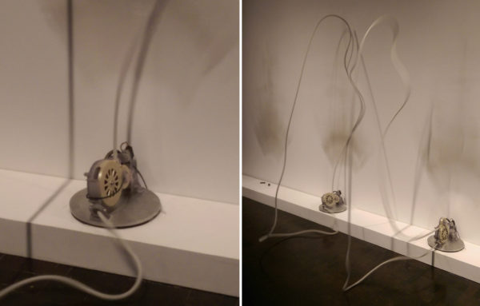
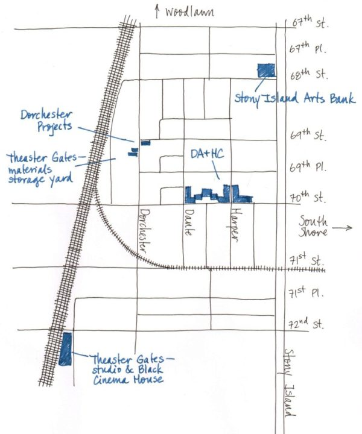
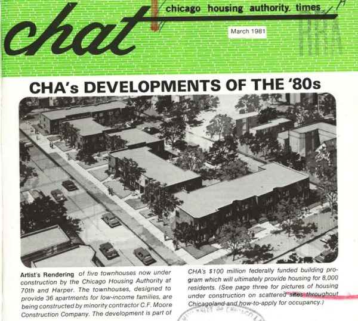
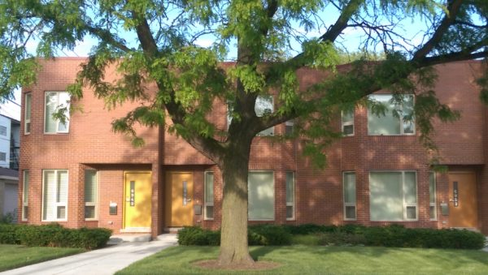
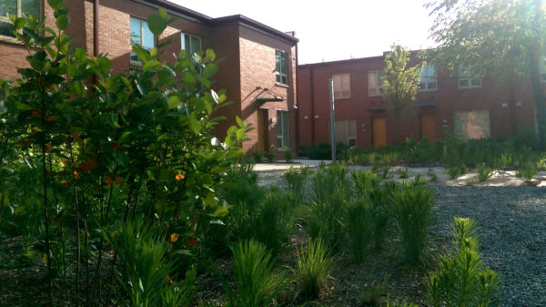

The creation of a true artificial intelligence is likely still decades away, but as limited forms of machine intelligence become increasingly ubiquitous, questions about the relationship between we humans and our semisentient creations will become ever more pressing.
NEAT: New Experiments in Art and Technology
, on view this past fall at the
Contemporary Jewish Museum
in San Francisco, offered a few compelling explorations of artificial existence. Arranged among unremarkable interactive visualizations and video artworks, these artificial beings were both formally inventive and technologically topical.
The most emotionally arresting piece for me at NEAT was
Alan Rath
’s
Forever
, a robotic sculpture with long brown feathers that could rotate forward and back on mechanized hinges. The feathers were attached at regular intervals to a lens-shaped frame leaning against the wall of the gallery; they looked like the legs of a giant beetle or the eyelashes of a great empty eye turned on its side.
When I turned the corner and saw
Forever
for the first time, I felt a flash of irrational fear. I’m not normally afraid or disgusted by insects, but my heart was pounding fast and hard as I stood in front of
Forever
. The movement of its many feathers, like the skittering legs of a giant, empty beetle, roused in me a primordial panic. The expressive power of this piece came from the way that the feathers moved in concert, sometimes undulating, sometimes flapping, then standing straight out and wriggling frantically before flattening abruptly against the wall again. The movement of the sculpture was purposeful, if unpredictable.
Forever
was a hybrid creature, an eerie combination of organic and mechanical materials. As such, this sculpture offered a tantalizing (and uncomfortable) sketch of the kind of biodigital being that some scientists believe represent humanity’s most promising future. The springiness of the quills made the sculpture lively as it moved, even as the natural brown-and-white patterning of the feathers recalled the hapless pheasant or turkey from which they originated.
Forever
was an alchemical creation, one which appropriated and reconfigured the discarded artifacts of one creature in order to create a new being. The resulting creature was both beautiful, and a bit melancholy: pinned to the gallery wall like a framed insect, the sculpture appeared almost as if trying to climb the wall, to flee the museum. I was both fascinated and repelled by
Forever
, and I found that I couldn’t look at it for long before discomfort pushed me away.
Paolo Salvagione
’s
Rope Fountain
was a welcome relief from the intensity of
Forever
. Salvagione had constructed a sequence of sculptures, each consisting of a loop of white rope spun rapidly by a motor on the floor. Each loop appeared almost motionless, hanging in midair, its movement betrayed only by a penumbra of vibration about its silhouette and the humming of its motor. Each motor was on a pivot which allowed it to rotate parallel to the wall behind it. In addition, each motor had a nozzle controlling where the rope came out which was allowed to move forward and back. The regular motion of the motors along these axes caused the rope to move in unpredictable ways, swaying from side to side, stretching out horizontally, or rearing up to hit the wall behind.

(Left)
The rope was drawn into each motor at the bottom, and spun out again via a nozzle at the top. The motor and the nozzle were both free to pivot 180 degrees.
(Right)
Rapid rotation allowed each rope to twist and turn in midair.
The strength of
Rope Fountain
was the simplicity and transparency of the technology used to produce its complex, lifelike behavior. Standing in front of
Rope Fountain
, it was natural for me to attribute human motivations to the actions of the rope sculpture: curiosity, hesitation. The sculptures weren’t in the least anthropomorphic in form, but in their behavior, they reminded me of nothing so much as a line of dancers, moving freely and unselfconsciously. When a loop of rope twisted to dab at the ground, then recoil, I was reminded of a ballet dancer, eyes closed, exploring the world with their feet. Each rope sculpture was a line drawing, animated and lifted from the page, sketching a schematic being into existence. Each sculpture was also a creator, intermittently leaving faint smudges on the wall which collected to form dusty halos behind each loop of rope.
The technology used to produce these pieces was old - just a few motors, some rope, and a set of timetables to regulate the movement of each motor and nozzle. By exposing the technological apparatus that animated each sculpture, Salvagione demystified their behavior and allowed each piece to appear self-sufficient, autonomous. In all this discussion of Salvagione’s piece, I’ve struggled with “each” and “they”, and I would be remiss if I failed to acknowledge that I’ve been describing
Rope Fountain
in the singular, trying to convey the essence of the ideal form realized in each spinning loop. In short,
Rope Fountain
used technology, but it was not about technology - this was a piece about artificial beings and which questioned the minimum of what was required to represent a being.
Rath’s second robotic sculpture, called
Soon
, was a single enormous jointed arm mounted on a tripod. A floppy pink feather, of the kind used to make feather dusters, was attached to the end of the arm. As with
Forever
and
Rope Fountain
, the sculpture was capable of only a limited range of movement: the arm could rotate on its tripod and extend and retract, while the feather at the end was able to pivot freely in three dimensions. The sculpture was cordoned off from viewers by a circular border, like a circus ring. It was elegant, ungainly, absurd, pathetic.
Oxford philosopher
Nick Bostrom
writes in
Superintelligence
: “Normally, we do not regard what is going on inside a computer as having any moral significance except insofar as it affects things outside. But a machine superintelligence could create internal processes that have moral status…there is at least the potential for a vast amount of death and suffering among simulated or digital minds, and, a fortiori, the potential for morally catastrophic outcomes.”
Soon
suggested the possibility of a tension between the dual nature of artificial entities as tools created for human benefit, and as autonomous beings in their own rights. The robotic sculpture was far from a superintelligence - indeed, the feather duster attachment riffed on the dumb domestic devices that are ubiquitous today: dishwashers, dryers, washing machines, and vacuum cleaners.
Soon
was no more than a simple machine. Yet the gallery setting and the circus ring-like enclosure reframed the appliance as an actor, an individual (though a bit of freak): worthy of attention.
Sometimes,
Soon
would dance, spinning gracefully and then stretching to unfurl its feather with an elegant flick. These were the movements which seemed to elevate the robot above the level of “device”. Yet, at other times,
Soon
performed an absurd sketch of domestic labor, senselessly and ineffectually dusting the air before rotating to begin again. The circular movements of the arm, tracing the outline of the ring on the floor, echoed this temporal loop in which the device was trapped. It was the contrast between these two attitudes which made
Soon
appear forlorn, futile, pathetic. Strange as it seems, I almost felt able to sympathize with
Soon
.
Missing from any of these works (though handled beautifully by
Camille Utterback
in
Entangled
) was a convincing mode of interaction. Both of Rath’s pieces hinted at the possibility of interactivity, with
Soon
seeming to dust the noses of viewers, and
Forever
fluttering in time with sounds from the gallery, but in both cases the link between the environment and the actions of the sculpture was so subtle that it was unclear whether the appearance of responsiveness was due to accident or intention. Salvagione’s
Rope Fountain
didn’t offer even the suggestion of interactivity. The disinterested stance of these creatures was still compelling (though not altogether unfamiliar - think of teenagers or cats). Yet today, it’s the machines that can interact with (and track) us that are most interesting and frightening. Perception is an integral part of human existence; future artworks exploring artificial existence should use interactivity to engage this more deeply.
While Spike Lee’s
Chiraq
plays in theaters, Theaster is playing out a different vision of life on Chicago’s South Side, driven by Black culture instead of ‘black-on-black’ violence, and animated by art, rather than guns.
Chicago artist Theaster Gates bought an abandoned bank building for just $1 from the City of Chicago in 2013. Since then, his fans have eagerly awaited the debut of the
Stony Island Arts Bank
, an exhibition space and archive which opened in October to much fanfare. Though it’s an impressive demonstration of Gates’ fundraising chops (it cost $3.5M to make the building structurally sound), the building is architecturally underwhelming at present. Except for the lavish library at the back of the building, the Arts Bank is little more than an empty shell.
While
design blogs
and Instagrammers slaver over the empty Arts Bank, an important project just two blocks South has gone largely unnoticed. This project, a renovated mixed-income housing development called
Dorchester Art + Housing Collaborative
(DA+HC), deserves attention. Gates and his nonprofit
Rebuild Foundation
partnered with
Brinshore Development
and architects
Landon Bone Baker Architects
(LBBA) to create DA+HC, and the playful, generous redesign by LBBA makes it a star example of mixed-income housing redevelopment in Chicago. DA+HC is an important step in Gates’ overarching project to turn Greater Grand Crossing into a cultural hub.

Buildings owned by Gates or hosting Rebuild’s programs are marked in blue on this map. The map shows the corner of Greater Grand Crossing where Gates has focused his attention.
Once a bustling working-class neighborhood, Greater Grand Crossing was hollowed out in the 1960s and 1970s by white flight, and never fully recovered. The neighborhood today is poor (
25% of residents are below the poverty line
) and sparsely populated. Brick walk-up apartment buildings and single-family homes front on Greater Grand Crossing’s quiet one-way streets. On a closer look, many of these buildings are neatly boarded up with weathered plywood. There are vacant lots on every block - not the trash-littered and graffittied asphalt lots of the proverbial “inner city”, but green plots taken over by grass. It’s a neighborhood that has seen hard times.
Gates has sought to transform the neighborhood since he arrived in 2006. He recalled in a 2014 interv: “You know my block is a violent block…When I moved there, people didn’t want to visit…I was really determined for Sixty-Ninth and Dorchester to be the most important place in the city…There’s still extreme violence, and yet beautiful things should happen in black space, because violent things happen everywhere. Right?”
DA+HC sits on 70th Street between Dante and Harper Avenues in the middle of this community, across from an elementary school, a playground, and one of those verdant vacant lots. The housing complex was originally designed by the Chicago Housing Authority (CHA) in the late 1970s, and opened in 1981 with 36 units of public housing in seven two-story brick buildings.

This birds-eye rendering of Dante-Harper Townhomes was featured in a 1981 issue of the Chicago Housing Authority Times.
The buildings are arranged along the sidewalk to create semi-enclosed common spaces at the back, away from the street. These shared, sheltered outdoor spaces help foster a sense of community by providing a space for residents to gather. On the larger block, between Dante and Harper Avenues, the sheltered interior of the block is subtly divided into two smaller spaces by a building that is set back from the sidewalk. With ten (originally twelve) units opening onto each of these smaller spaces, this division creates outdoor spaces which are more sheltered and intimate, but still provide opportunities for community interactions.
The gaps between the buildings serve as passages which visually and acoustically link the sidewalk to the gardens in back, helping to integrate the residents into the social fabric of the neighborhood.
Simple variations in the plan of the CHA townhouses make the spare, undecorated facades attractive. The facades step gently to and from the sidewalk, creating elongated bays and shallow recesses to shelter the front doors. This articulation of the facade serves as a kind of economical decoration for the building, creating patterns of light and shadow and giving each unit a sense of individuality. The materials matter, too. The red bricks used to cover the facades of the townhouses are standard-size fired clay bricks, not the larger concrete bricks often used by the 1980s to cut labor costs. These construction details help the CHA units to blend pleasantly with the older brick apartment buildings and single-family houses on the neighboring blocks.

The beveled corners, entryway niches, and modulations in the plan of the facade lend visual appeal to the spare brick wall.
The Dante-Harper Townhomes reflect the complex and sometimes contradictory history of the CHA with respect to race, poverty, and housing in Chicago. The townhomes were built by the CHA as a result of a court order following the 1969 housing desegregation case Gautreaux v. Chicago Housing Authority. Gautreaux required the CHA to increase its stock of low-income units; to build or acquire public housing in white areas of the city before further development in racial minority areas; and to ensure that 50% of residents in each new development were drawn from the local community. Dante-Harper Townhomes failed in at least one respect: by the time it opened in 1981, the neighborhood was 70% - 90% black (hardly the integration required by Gautreaux!), and the CHA was building less housing, not more, than before. Despite this, the buildings avoid the banal, “poverty-oriented look” criticized by housing historian J. S. Fuerst. Perhaps inspired by developments commissioned by the CHA during the 1950s and 1960s, the Dante-Harper Townhomes was well-designed to invest the lives of its residents with dignity and foster a sense of community.
The Rebuild partnership made a number of important changes to the townhome development which further improve it. First, the central four-units between Dante and Harper were demolished to create an art center. Rebuild Foundation determined from a neighborhood survey that there was a need for performance space in Greater Grand Crossing. In response to this need, the art center at DA+HC houses a purpose-built dance studio and a craft space. Both will be open to residents of the neighborhood and to the arts elementary school across the street.
The dance studio is a beautiful space, with a high ceiling, spring-loaded wood floor for dancing, and lots of light. The front and back walls are all glass, save a vintage sliding door in front, and the resulting visual connection between the front and back of DA+HC helps link the semi-private spaces behind DA+HC to the public life of the neighborhood.
The landscaping created by
site design group
in collaboration with LBBA, is another significant addition to the development. In the original design, the sidewalk at 70th and Dante stretches twenty feet from the curb to the front doors of the townhomes. In the redevelopment, the expanses of concrete are replaced by generous front yards.
In the back, LBBA has replaced the grass backyards of the original design, which opened directly onto the alley, with two rock gardens containing seating and landscaped with shrubs and young birch trees. The architects also introduced a fence and a sidewalk along the back of this yard, heightening the sense of enclosure by dividing it from the alley. The parking spaces along the alley are surfaced using concrete brick pavers, rather than asphalt, which, from the rock gardens, creates the impression of a terrace that extends beyond the sidewalk.

The rear of DA+HC encloses a rock garden planted with low shrubs and young birch trees.
Finally, some small details - mustard yellow doors and a crimson band at the roofline - provide a playful touch. In short, the interventions of the Rebuild / LBBA / Brinshore partnership complement the existing strengths of the building and strengthen the possibilities for community formation by improving the shared spaces.
Residents of Greater Grand Crossing and critics alike have wondered whether Gates’ ascendant practice will gentrify the neighborhood in which it is anchored. Historically, artists have often been in the vanguard of displacement in neighborhood change - in the words of art historian Rosalynd Deutsche, artists are “the ‘shock troops’ of gentrification.”
The twelve CHA units at DA+HC do increase the neighborhood’s stock of affordable housing - but when compared with the
358 units CHA delivered in 2014
, it’s clear that they are a drop in the bucket. DA+HC is, at best, a gesture towards affordability. The reality of Greater Grand Crossing, according to Gates, is that gentrification still seems an unlikely and distant danger to most people on the block. Gates says: “People wanna leave if they can, and people have a right to leave. It becomes tricky…am I trying to trick people into staying? What can I offer?”
Perhaps the best way to understand the strategic position of DA+HC in Gates’ practice is as an incubator - a word that Gates himself has used elsewhere. Gates has long been interested in building communities of Black artists. In 2013, Gates
opened
the University of Chicago’s
Washington Park Arts Incubator
(WPAI), two and a half miles northwest of DA+HC. In the two years since it opened, WPAI has organized gallery shows by
Alexandria Eregbu
,
Caroline Kent
, and other Chicago artists, run training programs for local high-schoolers, and hosted community events. In 2013, Gates and artist
Eliza Myrie
hosted the first
Black Artists Retreat
(B.A.R.), which
brought dozens of Black artists together
at Dorchester Projects for two days of conversation and collaborative work.
At the Arts Bank, Gates has collected a vast (though uncatalogued) archive of Black history, literature, and media. Rebuild has a rotating artist residency program which brings artists to the neighborhood for a few weeks. Each resident artist is asked to use Rebuild’s collections at the Arts Bank in the work they produce during the residency.
Looking down into the atrium of the Stony Island Arts Bank. The pillars around the atrium are a temporary installation by artist Carlos Bunga. Photo by Steven Vance.
Unlike B.A.R. or the resident artists hosted by Rebuild Foundation, DA+HC is a sustained intervention which can be a source of stability and longevity for the artistic ecosystem in Greater Grand Crossing. Hopeful residents must apply to a panel of community members, and artists are given priority. Rebuild Program Manager Demecina Beehn says that DA+HC currently houses eight artists and curators, including a ceramicist, a filmmaker, and a makeup artist. In this way, DA+HC will bring artists who have a long-term involvement with the community - and, Gates is betting - with Rebuild’s collections. The
best piece
at the debut of the Arts Bank was not an artwork by Gates, but a monumental installation in cardboard by Portuguese artist
Carlos Bunga
. Similarly, in years to come, Gates’ most important work may come to be not his framed
fire hoses
or
tar paintings
, but the artistic activity he fomented on the South Side of Chicago.